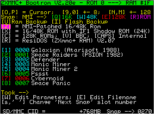

ZXMMC+ Software Page
Starting from Bootrom Version 2.11e, faster video text-output is provided thanks to an enhancement by Eugenio Ciceri.
ResiDos can be loaded from "tape" and installs itself into nonvolatile RAM. Then, the system can be switched off and on without the need to reinstall it. If a tape lead is not available, Here you may download the latest tested release in both .tap, .wav and .snap format (the latter can be uploaded to the board via ZX-Com program and RS-232).
Please
refer to ResiDos homepage for updates.
The CPLD will switch between odd and even ROM banks when an OUT $7FFD is detected. This makes the interface able to run two-roms systems (such as the 128K Spectrum or the BBC Basic). The 128K rom can be started on a 48K rubber machine!!! (the 128K menu appears and it's even possible to type-in simple basic programs with the 128K editor). The lack of banked RAM memory, however, makes this just a funny and weird thing. This bank switch is disabled when the system runs into RAM, to avoid problems with ResiDOS and Bootrom firmware (which is copied to ram on startup in order to have a 1KB rd/wr space).
Interface I ROM Shadowing has been implemented as well. The test machine (a 48K rubber-keys ZX-Spectrum) is able to perform both RS-232 and Network communication, exactly as if a real IF1 was plugged on the edge connector. The 8K additional rom is fully functional. See the IF1 section.
Sd/mmc card-based 16/48/128K snapshots can be saved and restored by pressing the NMI button, exactly as on ZX-Badaloc. The absolute address in the card can be choosen during first-use card initialization, allowing different filesystems to be placed at the beginning of the card. This feature has been tested on both 48K and 128K "heatsink" machines. Restoring a 48K program takes about 0,5 sec. The offset for snapshot area in the sd-card is shown in the bottom line of the bootrom's power-on screen (768MB in the screenshot).
Another interesting feature is the ability to take a single, FLASHROM-based snapshot of the whole (48K only) machine state. The last three 16K FLASH banks are used in the flashrom chip. This is a very useful option when ResiDOS needs to be reinstalled (avoiding the need to reload the installer from tape) when no snapshot-formatted sd-card are available. The snapshot should be performed right after loading ResiDOS installer from tape.
Starting from version 0.30 of Bootrom, the zxmmc+ interface can be used as a test device aimed at identifying defective RAM chip on the Spectrum mainboard, when a 16K-bank problem is suspected (and the machine is simply unable to start). Placing a jumper between the GND and Kempston's FIRE input will start the firmware in 'debug' mode: no Spectrum memory is used at all (the payload is that RAM BANK 0 will be overwritten). The bootrom menu will show up (provided that the processor is able to run). Then, the Win32 ZX-Com program can be used on the RS-232 link download and upload any memory region on the on-board RAM. This makes really easy to detect any faulty ram chip. I've been able to fix a 48K machine by just replacing THE defective chip, instead of guessing what to replace next (chips are usually soldered).
Many improvements has been introduced in version 1.40: snapshots can be saved/restored via rs-232 interface (using the zx-com companion Win32 program) in 16/48/128K mode, like on ZX-Badaloc; added $1FFD and $7FFD registers support (now all the memory of a 128K machine can be dumped); bugfix in the 128K sd-card snapshow (I-register could have caused 'snow' effect on screen); the FlashROM routine can now program a 64Kbyte block in one shot (instead of four 16K chunks).
BOOTROM Firmware (download):

The Bootrom firmware should be flashed into ROM Bank 0. It displays a menu (see the picture) which allows the selection of a "startup media", such as a previously installed ResiDOS, a ROM bank or a snapshot (if a suitable card is found). ROM Banks may be programmed with 16/48K Spectrum alternate ROMs.
Current
version can transfer data (using the IF1-compatible RS-232 port
built on the interface) to / from the ZX-Com Win32 program, the same
used for ZX-Badaloc communication. This system allows to enter
communication at ANY time by means of NMI assertion and has been
developed for the 16/48K version of the ZX-Spectrum only, as it
requires a modified Sinclair ROM which pages-in the bootrom bank
when a NMI is detected.
This can also work in 128K machines, provided that the active rom is ROM1 (the 48K basic). Things are made in such a way that when the bank is switched, there is a match of addresses so code execution can continue in the other rom. When exiting from the NMI handler, things works in the same way but in the opposite direction. See the modified sinclair ROM generator source code included in the zip file, "mksincla.asm", for further details. This modified Sinclair ROM should be programmed in FLASH ROM BANKS 2 and 3, while the bootrom should be in BANK 0. Bank 1 is reserved for bootrom extensions. The reason for having the modified Sinclair rom in two banks (bank 2 and 3 are identical) is the $7FFD register handling, which may accidentally switch between odd and even rom numbers.
The
ZX-Com program allows transferring data to / from the
ZX-Spectrum (any memory region of any size), possibility to
force a JP to a certain address (this allows uploading machine
code to be tested via RS-232 and jumping in it with a few mouse
clicks, making debug session faster and easier), raw sd-card
read and write, FLASHROM banks programming from a 16/32/48/64K
.bin or .rom file (to install new roms), automated bootrom
firmware update into flashrom, sd-card and rs-232 snapshot
backup/restore/verify, bootrom debugging in ram. Communication
speed is fixed at 19,2Kbps. Latest version of ZX-Com supports
both 115K2 (ZX-Badaloc) and 19K2 (ZXMMC+) speeds.
The bootrom provides a single 48K
snapshot to be taken directly into the Flash
chip (when no sd-card is present) by using key 'R' after
pressing the NMI button on the interface. To restore this
snapshot, press 'T' key from the bootrom menu.
Current FLASHROM Layout (512KB size):
Bank ROM Address Content
0
0-3FFF
Bootrom
firmware
1
4000-7FFF
Unused (bootrom extension?)
2
8000-BFFF 16/48K
modified ROM (nmi handling)
3
C000-FFFF Same
as bank 2
4
10000-13FFF
16/48K modified ROM for Interface I (rs-232 and network)
5
14000-17FFF Interface I
modified ROM (match with bank 4 for IF1 commands extension)
6
18000-1BFFF
128K ROM 0
7
1C000-1FFFF 128K modified ROM 1
(nmi handling)
8
20000-23FFF
BBC Basic ROM 0
9
24000-27FFF Same as Bank 7
(128K rom 1)
10 28000-2BFFF 48K ROM with "usr 14500" program which downloads any rom into system ram
... spare banks ...
29
74000-77FFF
Flashrom-based 48K snapshot, first bank
30
78000-7BFFF Flashrom-based 48K
snapshot, second bank
31
7C000-7FFFF Flashrom-based 48K
snapshot, last bank
By default, the flash-based snapshot will contain the latest tested ResiDos installer.
Here you can download all roms in one shot. This archive contains the new, less invasive NMI handler patch.
These are the details of changes in 48K and 128K ROM1 for nmi handling (banks 2, 3, 7, 9).
INTERFACE I Shadow ROM (Version 2) in Banks 4+5
For
INTERFACE I operation, two roms (24KBytes) are needed: the
internal zx-spectrum rom and a new 8K rom, provided in the IF1
interface. Since the zx-spectrum's memory map has space for only
one 16K rom, the IF1 does a trick: roms are swapped in and out:
OPCODE FETCH +0008: 48K -->
IF1 (IF1 ROM should be paged in)
OPCODE FETCH +0700: IF1 -->
48K (MAIN ROM should be paged in)
OPCODE FETCH +1708: 48K -->
IF1 (IF1 ROM should be paged in)
In other
words, when the Z80 executes code at any of the listed
addresses, the IF1 logic SWAPS the active rom accordingly with
the above table.
On the ZXmmc+, the lack of bank switching hardware (which is present on the original IF1) has been replaced by a few modification to both IF1 rom and it's 'companion' 48K rom. Programming these two rom into the ZXmmc+ flash (48K modified rom into bank 4, IF1 modified rom into bank 5) will bring a fully functional ZX-Spectrum with IF1 RS-232 and Network capability. The command interpreter and syntax checker is enhanced by new commands, as happens on the original hardware. To achieve this, the original V2 rom has been disassembled and slightly modified.
Details
of all the changes are listed here.
A working example showing a LLIST command redirected to RS-232 by IF1 functionality and then displayed into an Hyperterminal window, using IF1 syntax, is available here.
MMCTEST comes from the ZX-Badaloc SD/MMC Card firmware and let perform a few tests on the cards, such as copying/restoring a few KBytes from/to screen memory, copy blocks from card to card, and so on.
NMITEST shows how to "patch" the system ROM and run it in the zxmmc+ RAM. This program will copy the internal ZX-Spectrum ROM to the last RAM bank, patch the NMI handler so that it increments the first byte of video memory on each NMI call, then pass the control to the patched RAM. Pressing the NMI button of the zxmmc+ interface will actually increment the first video memory byte.
FLASHROM can program the FLASH ROM. Compare and Block Erase functions are also provided. One of it's many functions creates a patched rom from the internal ZX-Spectrum 48K one, with a small subroutine located in a spare area which can load a 16K ROM into Spectrum ram. This is useful to "download" from a ROM bank some assembly-written programs.
DIAGNO (nonvola.asm) checks the nonvolatile RAM against data loss during power cycling. This program will copy the entire 512K RAM into a spare region on a sd card. Data can be then compared at any time.
For any mismatch, a 5-bytes record is saved starting from address 33000:
1
byte RAM Bank
2 bytes RAM Address (0-3FFF), MSB first
1 byte RAM content
1 byte CARD content
Comparison is halted if more than 4095 mismatches are found.
The 'nonvola' program is the assembly part of the basic program "DIAGNO", which displays a simple user interface for saving, restoring and comparing the entire nonvolatile-ram into a fixed SD-CARD location, at offset +256MB. The snapshot "diagno.snap" can be uploaded via rs-232 and contains everything.
Home Technical Description Hardware Details QuickStart Schematic PCB Contact the Author